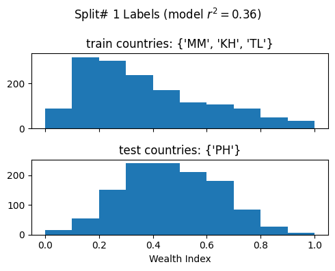
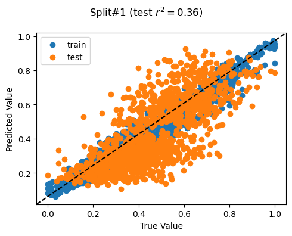
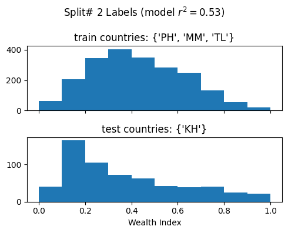
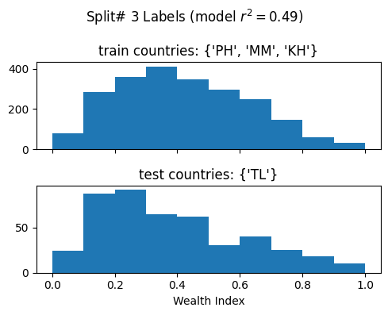
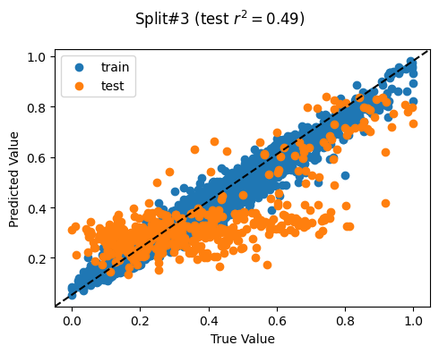
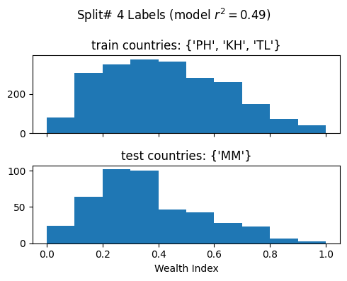
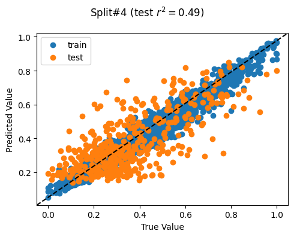

import osimport syssys.path.append("../../")import jsonimport pickleimport fasttreeshapimport matplotlib.pyplot as pltimport numpy as npimport pandas as pdimport shapfrom sklearn.ensemble import RandomForestRegressorfrom sklearn.metrics import r2_scorefrom sklearn.model_selection import GroupKFold%reload_ext autoreload%autoreload 2
IProgress not found. Please update jupyter and ipywidgets. See https://ipywidgets.readthedocs.io/en/stable/user_install.html
Train model: Cross-country
This notebook is for re-producing the final model used to estimate wealth for the countries with no DHS ground truth.
We combine data from 4 countries where we have DHS ground truth (KH, MM, PH, TL) and train one combined model from all these data. The features and wealth indices are scaled per country to make them comparable.
The output model is a Random Forest regressor trained on scaled labels (DHS Wealth Index) and features (area statistics for OSM, Ookla, and nighttime lights).
We evaluated the performance of the model via a leave-one-out cross-validation procedure in a separate notebook. Refer to our doc site for more details.
Load Training Data
ROLLOUT_DATE ="-".join(os.getcwd().split("/")[-1].split("-")[:3])# CSV file contains all data# Metadata JSON file lists the feature columns and label columndata = pd.read_csv(f"{ROLLOUT_DATE}-training-data.csv")withopen(f"{ROLLOUT_DATE}-training-data-columns.json", "r") asfile: column_metadata = json.load(file)features = data[column_metadata["features"]]labels = data[column_metadata["label"]]
Cross-Validation
Note that the results here are different from our initial simulations (see our docsite). We switched to using MinMaxScaler instead of StandardScaler even though the latter provided higher overall R^2 values.
This is because in practice when we rolled out the models on actual nationwide data, we found that there was an overwhelming number of sparsely-populated, remote areas that had 0 values for the features. This pulled down the mean heavily for StandardScaler, falsely representing almost all areas with non-zero features as being “above-average”, which also led most predictions to be > 0 / above-average. We found that utilizing MinMaxScaler was more stable in normalizing the range of feature values.
# Set parametersgroupkfold_col ="DHSCC"random_seed =42# Prepare Folds - One per countrycountries_data = pd.concat([data["DHSCC"], features, labels], axis=1)groups = countries_data["DHSCC"].valuescv = GroupKFold(n_splits=len(set(groups)))print(cv.split(features, groups=groups))print(f"Number of splits based on DHSCC unique values: {cv.get_n_splits()}")# Run Leave One Out Cross Country Validationmodel = RandomForestRegressor(n_estimators=100, random_state=random_seed, verbose=0)split_r2_list = []for i, (train, test) inenumerate(cv.split(features, labels, groups=groups)):print(f"Split# {i+1}")# Print info about current split train_labels =set(groups[train]) test_labels =set(groups[test])print(f"Train countries (num samples): {train_labels} ({len(train)})")print(f"Test countries (num samples): {test_labels} ({len(test)})")# Split data into train/test X_train = features.values[train] X_test = features.values[test] y_train = labels.values.ravel()[train] y_test = labels.values.ravel()[test]# print('Input shapes (X_train, X_test, y_train, y_test): ',np.shape(X_train), np.shape(X_test), np.shape(y_train), np.shape(y_test))# Train model and get r2 model.fit(X_train, y_train) split_r2 = r2_score(y_test, model.predict(X_test)) split_r2_list.append(split_r2)print(f"Split r^2: {split_r2}\n")# Plot histogram of labels fig, ax = plt.subplots(2, 1, sharex=True, figsize=(5, 4)) ax[0].hist(y_train) ax[0].set_title(f"train countries: {train_labels}") ax[1].hist(y_test) ax[1].set_title(f"test countries: {test_labels}") ax[1].set_xlabel("Wealth Index") fig.suptitle(f"Split# {i+1} Labels (model $r^2 = {round(split_r2,2)}$)") plt.tight_layout() plt.show()# Plot scatter plot fig, ax = plt.subplots(1, 1, figsize=(5, 4)) ax.scatter(y_train, model.predict(X_train), label="train") ax.scatter(y_test, model.predict(X_test), label="test") ax.plot([0, 1], [0, 1], transform=ax.transAxes, linestyle="dashed", color="k") ax.set_xlabel("True Value") ax.set_ylabel("Predicted Value") ax.legend() fig.suptitle(f"Split#{i+1} (test $r^2 = {round(split_r2,2)}$)") plt.tight_layout() plt.show()split_r2_mean =round(np.array(split_r2_list).mean(), 4)split_r2_std =round(np.array(split_r2_list).std(), 4)print(f"Mean split r^2 (std): {split_r2_mean} ({split_r2_std})")
<generator object _BaseKFold.split at 0x7f4a235275f0>
Number of splits based on DHSCC unique values: 4
Split# 1
Train countries (num samples): {'MM', 'KH', 'TL'} (1507)
Test countries (num samples): {'PH'} (1213)
Split r^2: 0.36148169214316106


Split# 2
Train countries (num samples): {'PH', 'MM', 'TL'} (2109)
Test countries (num samples): {'KH'} (611)
Split r^2: 0.5332864418029645

Split# 3
Train countries (num samples): {'PH', 'MM', 'KH'} (2265)
Test countries (num samples): {'TL'} (455)
Split r^2: 0.48714849847273733


Split# 4
Train countries (num samples): {'PH', 'KH', 'TL'} (2279)
Test countries (num samples): {'MM'} (441)
Split r^2: 0.49303227606153877


Mean split r^2 (std): 0.4687 (0.0644)
Model Training
We evaluated the performance of the model via a leave-one-out cross-validation procedure in a separate notebook, so we will not repeat it here. Refer to our doc site for more details.
from sklearn.ensemble import RandomForestRegressormodel = RandomForestRegressor(n_estimators=100, random_state=random_seed, verbose=0)model.fit(features.values, labels.values.ravel())
RandomForestRegressor(random_state=42)
In a Jupyter environment, please rerun this cell to show the HTML representation or trust the notebook. On GitHub, the HTML representation is unable to render, please try loading this page with nbviewer.org.